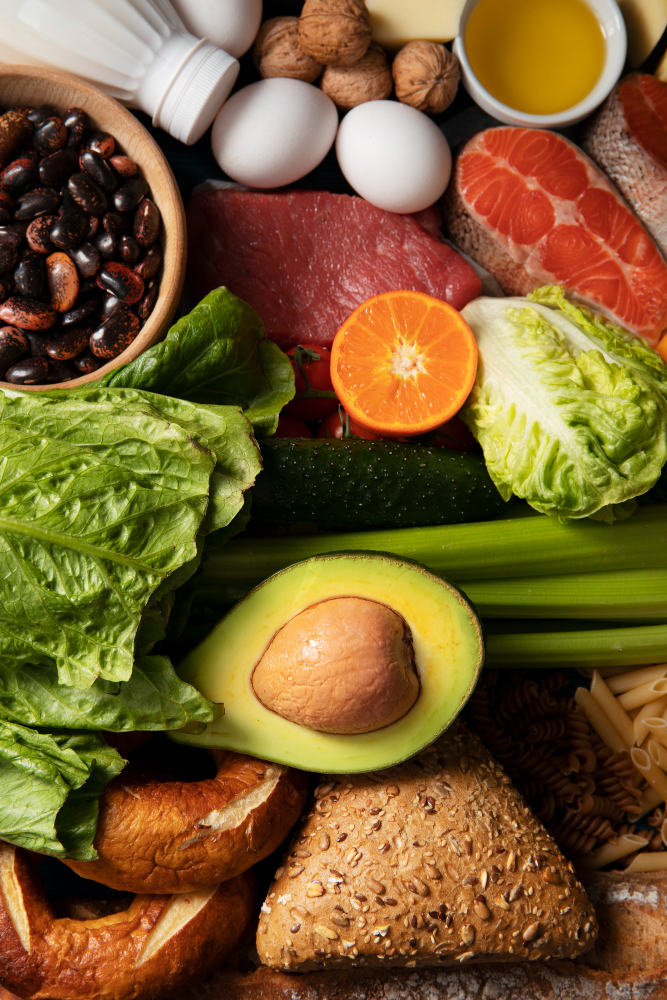
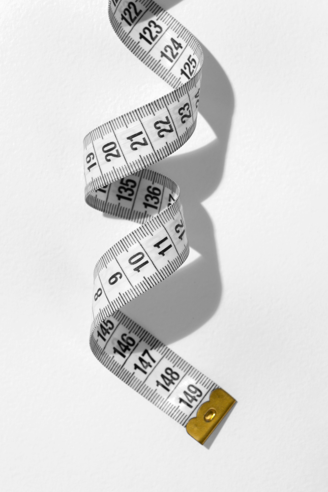

Alimentos Saúdaveis
Frutas e Vegetais: Essenciais para uma Vida Saudável
Frutas e vegetais são a base de uma alimentação equilibrada. Eles são ricos em vitaminas, minerais, fibras e antioxidantes, que ajudam a fortalecer o sistema imunológico e prevenir doenças crônicas. Frutas como maçã, banana, e laranja fornecem energia e nutrientes essenciais, enquanto vegetais como espinafre, brócolis, e cenoura oferecem fibras e vitaminas importantes como a vitamina A e C. É recomendado incluir uma variedade de cores no prato, garantindo assim um mix completo de nutrientes.
Grãos Integrais: A Fonte de Energia Sustentável
Grãos integrais, como arroz integral, aveia, e quinoa, são fundamentais para fornecer energia duradoura ao longo do dia. Diferente dos grãos refinados, eles mantêm a fibra e os nutrientes intactos, o que auxilia na digestão, controla os níveis de açúcar no sangue e melhora a saúde do coração. Incorporar grãos integrais à dieta pode ajudar a manter o peso saudável e reduzir o risco de diabetes tipo 2.
Proteínas Saudáveis: Construa e Repare os Músculos
As proteínas são cruciais para a construção muscular, reparação de tecidos e produção de enzimas e hormônios. Fontes saudáveis de proteína incluem peixes como salmão e atum, carnes magras como frango e peru, além de leguminosas, nozes e tofu. A escolha de proteínas magras e de origem vegetal pode ajudar a manter o coração saudável, enquanto proporciona os aminoácidos necessários para o corpo.
Exercícios Físicos
Exercícios Aeróbicos: Melhore sua Saúde Cardiovascular
Exercícios aeróbicos, também conhecidos como atividades cardiovasculares, são essenciais para manter o coração e os pulmões saudáveis. Caminhada, corrida, natação e ciclismo são exemplos populares. Praticar 150 minutos de exercícios aeróbicos moderados por semana pode ajudar a controlar o peso, reduzir a pressão arterial e melhorar o humor, devido à liberação de endorfinas.
Exercícios de Força: Ganhe Músculos e Fortaleça os Ossos
Treinos de força são igualmente importantes, pois ajudam a construir músculos e fortalecer ossos. Isso inclui atividades como levantamento de pesos, flexões, e até yoga ou pilates. Ao fortalecer os músculos, você também melhora o equilíbrio e a postura, o que pode prevenir lesões e facilitar as atividades diárias.
Dicas para Iniciantes: Comece Devagar, mas Consistente
Se você está começando, a chave é ir devagar e ser consistente. Comece com caminhadas diárias de 20 minutos, aumente gradualmente a intensidade e experimente diferentes tipos de exercícios para encontrar o que funciona melhor para você. Sempre faça alongamentos para aquecer antes de se exercitar e alongue novamente ao final para evitar lesões.
Suplementos
Vitaminas e Minerais: Um Suporte Importante para a Saúde
Embora seja ideal obter a maioria dos nutrientes dos alimentos, muitas pessoas podem se beneficiar de suplementos vitamínicos. Vitaminas como a vitamina D, por exemplo, são essenciais para a saúde óssea e imunológica, mas pode ser difícil de obter apenas através da dieta. Suplementos de cálcio, magnésio e ferro também são recomendados em casos de deficiências. Sempre consulte um médico antes de começar a tomar qualquer suplemento para garantir que você realmente precisa.
Proteínas em Pó: Um Suporte Extra para Ganho Muscular
Para aqueles que têm uma rotina intensa de exercícios ou estão buscando aumentar a massa muscular, os suplementos de proteína em pó podem ser úteis. Proteínas como whey, caseína ou proteínas vegetais são facilmente absorvidas e ajudam na recuperação muscular após os treinos. É importante, no entanto, usar esses suplementos com moderação e como parte de uma dieta equilibrada.
Suplementos de Ômega-3: Benefícios para o Coração e o Cérebro
Os ácidos graxos ômega-3, encontrados em peixes gordurosos como salmão, são conhecidos por seus benefícios para a saúde cardiovascular e cerebral. Eles ajudam a reduzir a inflamação, melhoram a circulação sanguínea e podem até mesmo aumentar a função cognitiva. Suplementos de óleo de peixe ou óleo de algas são ótimas opções para quem não consome peixes regularmente.
Saúde Mental
Técnicas de Relaxamento: Encontre Paz em Meio ao Caos
A saúde mental é tão importante quanto a física, e técnicas de relaxamento podem ajudar a reduzir o estresse e a ansiedade. Práticas como meditação, respiração profunda e mindfulness ajudam a manter o foco no momento presente e a acalmar a mente. Dedicar 10 a 15 minutos por dia para relaxar pode fazer uma grande diferença no seu bem-estar geral.
Importância do Sono: Recupere suas Energias
Dormir bem é fundamental para manter a saúde mental e física. Durante o sono, o corpo se recupera e o cérebro processa informações e emoções do dia. Dormir de 7 a 9 horas por noite ajuda a melhorar a memória, o humor e até mesmo o desempenho físico. Para uma boa noite de sono, tente estabelecer uma rotina de horários regulares, evite eletrônicos antes de dormir e crie um ambiente relaxante no quarto.
Importância de Pedir Ajuda
Se o estresse se tornar avassalador ou afetar seu desempenho no trabalho, escola ou em suas relações pessoais, é importante buscar apoio. Conversar com um amigo ou familiar de confiança pode ajudar a aliviar a carga emocional. Além disso, considere procurar um profissional de saúde mental, como um psicólogo ou terapeuta, para orientação e suporte adequados.

IMC (Índice de Massa Corporal)
Calcule o seu IMC
O IMC (Índice de Massa Corporal) é uma medida utilizada para avaliar se uma pessoa está em um peso adequado para sua altura. Ele é amplamente utilizado como uma ferramenta simples para identificar se alguém está abaixo do peso, com peso normal, sobrepeso ou obesidade. O IMC é calculado dividindo o peso de uma pessoa (em quilogramas) pela sua altura (em metros) ao quadrado.
Fórmula do IMC:
IMC = peso (kg) / altura (m)2
O IMC é categorizado da seguinte maneira:
Abaixo de 18,5: Abaixo do peso
18,5 a 24,9: Peso normal
25,0 a 29,9: Sobrepeso
30,0 a 34,9: Obesidade Grau I
35,0 a 39,9: Obesidade Grau II (severa)
Acima de 40: Obesidade Grau III (mórbida)